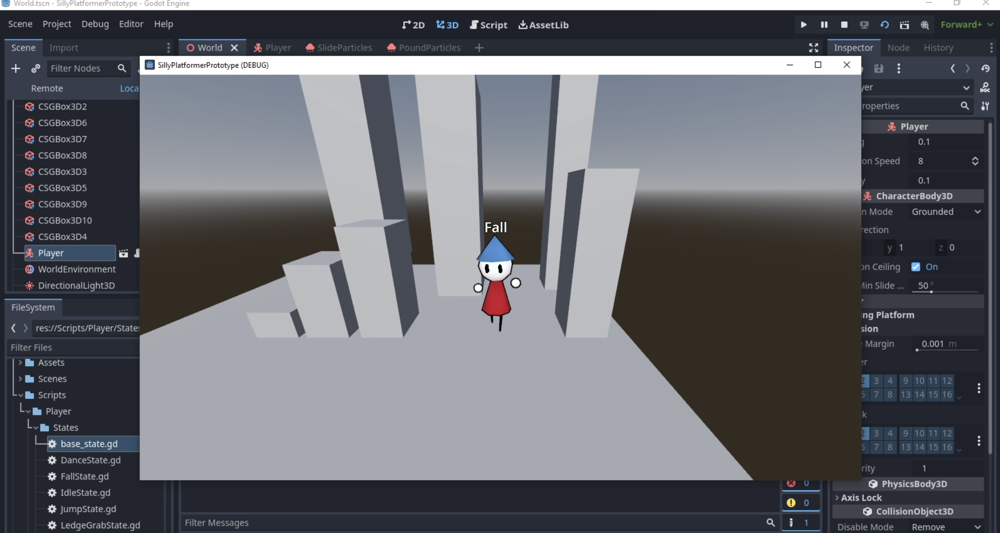
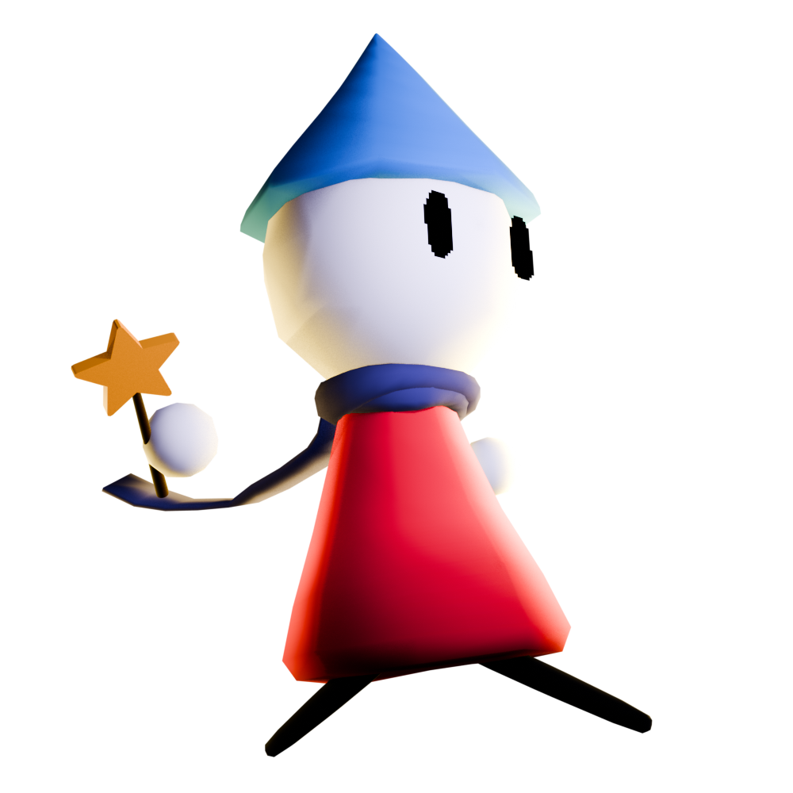

Hello! In this post I want to explain what is Wizard Fella and what is Wizard Fella Islands
In 2023 I was experimenting with making multiplayer games and one of them was called Mini Fellas. It was eventually abandoned, however I still really liked the design of the player characters in it. And so after a few months, I started making a platformer game with that same character. This eventually became Wizard Fella.

Screenshot from the first video of Wizard Fella
My main inspirations for it were Robot 64 (a game on roblox) and Mario 64. I made quite a big moveset and continued working on Wizard Fella throughout 2023 and 2024 and even released a playable demo. However I had really high expectations without a clear plan, story or style for it, and this is why eventually I cancelled it.
In 2025 I decided to come back to Wizard Fella, this time from a slightly different angle. Wizard Fella Islands is a different take on the original idea for Wizard Fella but it's still all about doing a lot of cool moves and saving the world.
The Story
After having a weird dream, a Fella named Flute (the main character) thinks that maybe they are the legendary Wizard Fella. After an unexpected encounter on their home island, Maple Isle, they unknowingly get roped into a massive evil plot and, like a fool, decide to try and stop it. They leave their home to follow a trail from island to island and eventually reach the end of the line. The one in The Temple has been waiting for Flute and now Flute’s actions will decide the fate of The Islands.

Image of Flute
The Islands
I came up with the idea of Islands to simplify the process of making the game as they let me divide the game into distinct parts (original Wizard Fella was supposed to be open world). In the main story mode the game will be divided into 7 distinct islands which will all revolve around a different vibe and topic. Each island will be divided into 3 parts, and have a different objective for you to do.
The Islands I am thinking about having:
Big Dreams (Tutorial)
Maple Isle
Chilly Peaks
Gearson's Factory
Squeaky Retreat
Century Tree
The Temple
What measures am I taking to make sure this game doesn't end up like the original (cancelled)
Unlike previous time where I went in straight into making the game without any idea of what it was gonna be (it was quite literally just an experiment for the first few weeks). This time I came up with and wrote down my ideas first before actually making the game.
I will also be having monthly posts (on this site) where I will post updates on the status of the game and what I worked on this month.
Hopefully this answers any questions you might have about Wizard Fella and Wizard Fella Islands
You can always shoot me a message on the discord or my email if you have some questions
I also want to note that the game is still quite far from being finished and I have no idea when it will be finished. Also It'd be cool to create a steam page at some point, but I think it's too early right now.
PS: Check out the first monthly post above this one.

Holy moly is that real